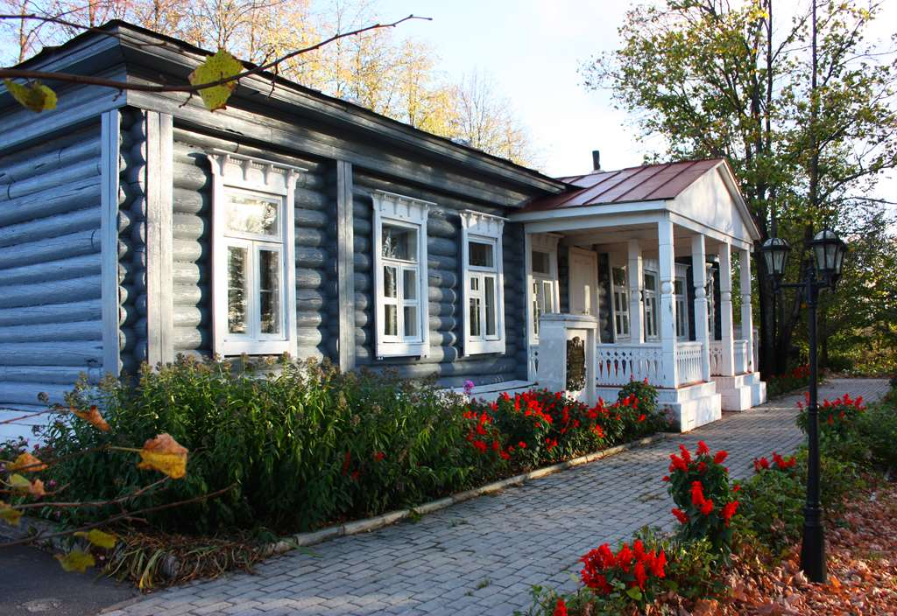
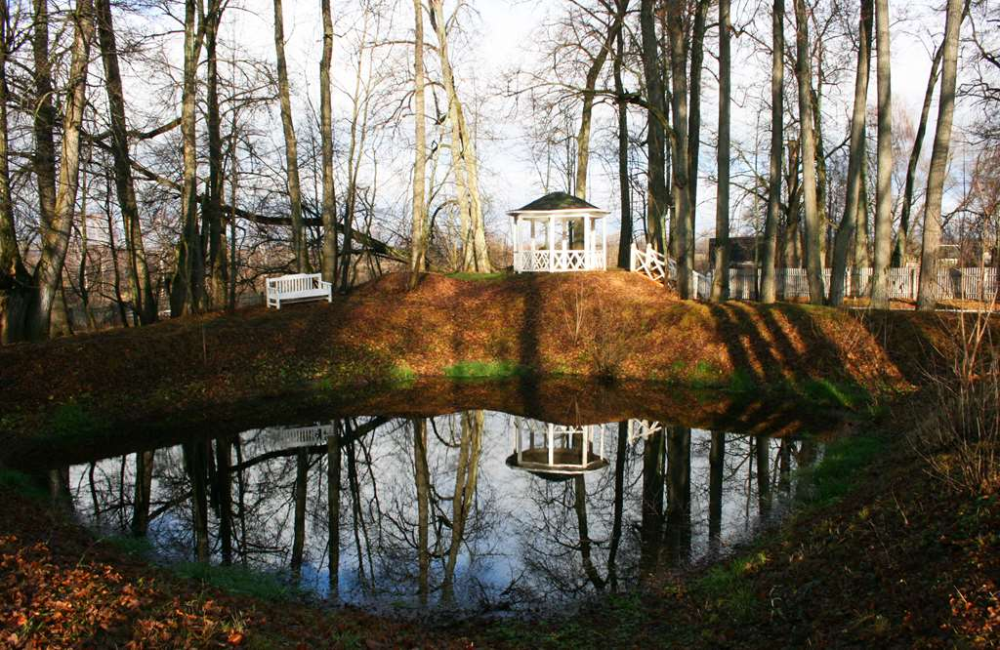
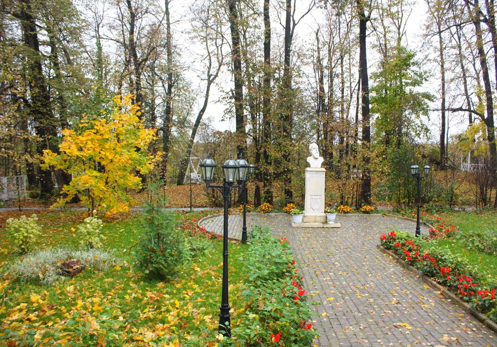
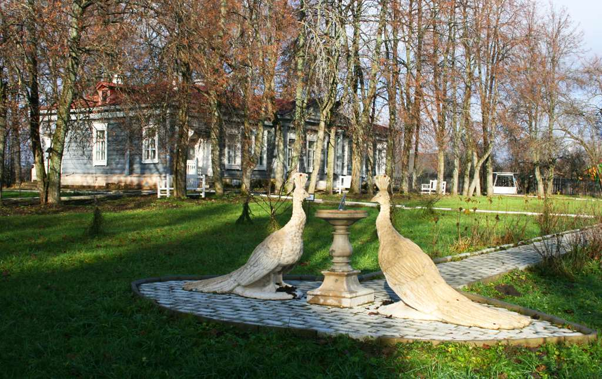
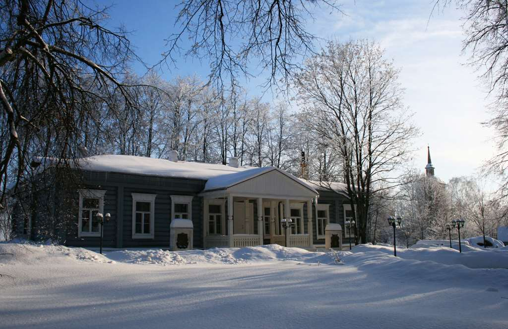

Усадьба Маринино - "дворянское гнездо"
Музей-усадьба Танеевых – филиал Историко-краеведческого музея Ковровского района расположен на территории памятника истории и архитектуры XVIII – XIX вв. – усадебного ансамбля Танеевых в селе Маринино Ковровского района Владимирской области. Усадебный ансамбль состоит из деревянного главного усадебного дома, уникального образца провинциальной усадебной архитектуры второй половины XVIII в.; каменной церкви в честь Покрова Пресвятой Богородицы, устроенной в 1808 г. Танеевыми, и усадебного парка – ровесника дома.
Музеефицированный усадебный комплекс был открыт осенью 2008 г., а в 2013 г. создан филиал МБУК «Историко-краеведческий музей Ковровского района» – музей-усадьба Танеевых. Более 10 лет восстановление родовой усадьбы Танеевых является одним из главных направлений в работе Историко-краеведческого музея Ковровского района.
К настоящему времени в главном усадебном доме созданы и действуют три экспозиции: «Село Маринино – дворянское «гнездо» Танеевых»; «Окрестности села Маринино» и виртуальная экспозиция «Венок владимирским усадьбам». В ближайшее время в музейное пространство будут включены все площади главного усадебного дома, и к уже действующим добавятся две новые экспозиции – «Кабинет хозяина усадьбы» и «Столовая комната в усадьбе». Они призваны воссоздать атмосферу жизни в сельской провинциальной дворянской усадьбе в начале XIX в.
Помимо новых музейных экспозиций планируется открытие в усадебном доме выставочного зала, где будет представлена портретная галерея владимирского дворянства (на сегодняшний день по проекту «Владимирский дворянский портрет» создано более 80 портретов, в том числе членов семьи Танеевых и их родственного окружения, которые находятся в фондах районного музея).
Усадьба Танеевых сотрудниками музея рассматривается не только как историко-культурный, но и как природно-географический объект. Восстановление усадебного комплекса в старинном ковровском селе включает и благоустройство приусадебной территории, в том числе парка. К сегодняшнему дню старинные липовые аллеи украсили парковые лавочки, беседка на парнасе, качели, мостик через пруд, площадки для старинных дворянских и народных игр.
Недалеко от главного дома разбит плодовый сад. Здесь осенью 2011 г. была открыта новая ландшафтная экспозиция «Обитель Хроноса и Феба» с солнечными часами. Неповторимое своеобразие марининской усадьбе придает скульптурная композиция у центрального входа в музей – белокаменные знаки с родовым гербом Танеевых и бюст выдающегося композитора С.И. Танеева. Усадебный комплекс Танеевых уже сейчас стал одним из излюбленных мест проведения церемонии бракосочетания молодоженов.
МБУК «Историко-краеведческий музей Ковровского района» с 2009 г. состоит членом АММиК (Международная ассоциация музыкальных музеев и коллекций). Проведение камерных концертов классической музыки в музее-усадьбе Танеевых является неотъемлемой частью музейно-образовательных программ. Особое внимание уделяется творчеству композиторов из рода Танеевых. В перспективе усадебный ансамбль Танеевых может стать одной из площадок для проведения музыкальных фестивалей.
Одним из объектов усадебного комплекса является каменный Покровский храм. Его история связана как с Танеевыми (храмоздатели), так и с судьбой Л.Н. Делекторской – «музы» великого французского художника Анри Матисса. Проект музея «Марининский некрополь» предполагает восстановление родового некрополя Танеевых при Покровском храме (совместно с РПЦ и волонтерами), а проект «От Маринина до Парижа» – проведение в музее-усадьбе Танеевых программ художественно-искусствоведческого цикла.
За время восстановления усадебного комплекса сотрудниками музея проделана огромная работа, однако музеефикация марининского усадебного ансамбля до настоящего времени еще не завершена. Сегодня к услугам посетителей усадьбы Танеевых около 25 экскурсионных и туристско-развлекательных программ, цикл событийных праздников в течение всего года. Дальнейшие проекты по развитию музея-усадьбы Танеевых затрагивают различные направления его деятельности. Реализация некоторых перспективных проектов по развитию музея-усадьбы Танеевых должна привести к созданию первого во Владимирской области средового музея-усадьбы с исторической реконструкцией усадебной и сельской жизни России XIX столетия.
Материалы вязы с сайта Музея-Усадьбы Танеева, http://kraeved-museum.ru/muzej-usadba-taneevyh